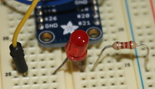
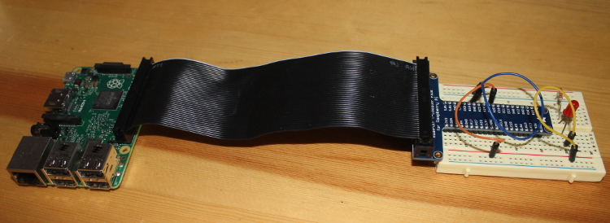
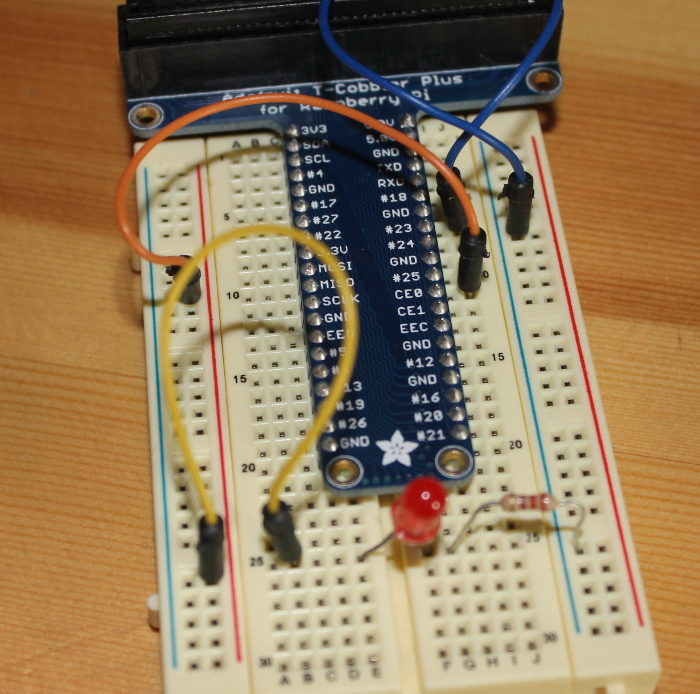

LEDs are ubiquitous. Everywhere you turn you see some LED sign or other blinking encouragement to buy something, eat somewhere, run because the Cylons are attacking ... lots of things! How do all those things work? LEDs are quite simple but how do you control them with a Raspberry Pi? That is what I set out to figure out.
LED stands for "light emitting diaode." For that to make total sense you need to know what a "diode" is. A diode is an electronic device that allows electricity to pass one direction through it but not the other. Like driving in New Orleans - it is a one way street. This is important if you do your project and find the LED doesn't light up - check to be sure the juice is flowing the proper direction, if won't light if you are trying to go the wrong way on a one way street.
LEDs come in all sorts of colors. Red is the most common but you don't need to be limited to that. It is important to keep in mind that different LEDs have different tolerances which result in different sized resistors to protect them. You can check out a great article on choosing resistors for LEDs here. As you can see from the chart at the bottom of that page, most LEDs can be protected with 39 - 150 Ohm resistors. It turns out a slightly larger resistor is no problem. I had a boat load of 220 Ohm resistors laying around and that worked fine. If you put too much juice through your LED you will get to see some very interesting things, and perhaps release the magic blue smoke. It is a truth in physical computing that if the smoke escapes it is time to start over (and maybe flip a breaker).
How do you know how much resistance your resistor gives? Check the color bands. There are a number of easy to use resistor "calculators" out there, this one is quite simple to use. Again, if you are using a multimeter you can also measure resistance directly on the resistor you have.
Since LEDs only conduct electricity in one direction it is good to figure out what direction that is. If your LED is new then you want the longer wire coming out toward the juice, the shorter wire toward the ground. If (like me) you have a box of salvage components that you are using, you can't count on that long wire still being the original long one. To verify you can use a multimeter on its conductance setting. This allows you to put the probes of the multimeter to test whether a circuit is conducting electricity. Put the probes on one way and then the other, which ever direction conducts the juice is the direction to plug in the LED. When you have the LED and the resistor plugged into the breadboard it will look something like this:

Now to wire up the circuit. If you want to follow along closely (i.e. you are not familiar with the GPIO pin out of a RPi and want to be sure the code here works) then make sure you plug everything in just the way it is in the photo below. Changes in model numbers bring along changes in GPIO pin numbers, pin outs, etc. so it is important to know your model. Forgot which model number you have (or maybe you have entirely too many RPis sitting around the house and not sure which one this is?) you can do a
cat /proc/cpuinfo
at the terminal, look for the line "Revision" - probably near the bottom of the output. Compare the revision number with the numbers in the table here to find your exact number. In my case the revision number is a21041 which tells me I'm using an old RPi 2 model B v1.1 made in China - not surprising since I bought it from Taobao. The pin out for the RPi 2 B models can be found here.
I am using a T-Cobbler Plus, a nifty little device from Adafruit that allows you to easily plug the GPIO pins from your RPi to a breadboard. You can see from the bird's eye view of the circuit there is a ribbon cable between the T-Cobbler and the RPi, the T-Cobbler pins are plugged into the breadboard bridging the little well in the middle, note that the T-Cobbler pins are wide enough you will loose a column or two of pins on the breadboard when using it. This thing is so handy, loosing parts of a couple columns of pins is a small price to pay.

From the circuit photo below you can see I have the orange wire plugged in at pin 25 on the right side, it is wired across to the red rail on the left side. Then the yellow wire connects the red rail to the row where the LED is plugged in. The LED spans the well in the middle of the breadboard and the resistor has one end in the row with the LED and one end in the blue (ground) rail on the right side of the breadboard. The blue wire connects the blue rail to a GND pin on the T-Cobbler.
Keep in mind that there are two ways to number the pins, I am referring to pin 25 because that is the Broadcom (BCM) way of referring to the pins. This will matter when we get to coding with RPi.GPIO. It also happens to be the way the pins are identified in the picture at the top of the linked page on pinouts.
So when electricity flows it goes from live pin (in our case pin 25)-> through the circuit -> to the ground pin. I like to think of it in that direction because that is the way the electrons are flowing. In our circuit they will flow out of pin 25 through the LED, then the resistor, then back to the ground pin on the RPi. It turns out that resistance is a function of the whole circuit so you can put the resistor on either side of the LED that is convenient.

Since I haven't talked about breadboards before I will offer a quick intro. Breadboards have holes in rows and columns. Usually there are two columns along the lateral edge of the board and then lots of rows (4 holes long usually) along the face of the breadboard, then a gutter then another set of 4 hole rows, then another set of 2 columns. Keep in mind the columns are connected to each other as are the rows. So if you put juice into a column you can tap into that column anywhere along the breadboard to get the juice out. Similarly if you wire one column to ground. In fact, wiring one column hot and the other as ground is quite standard. Our circuit is so simple I didn't do that but it is a useful practice.
The rows on the breadboard connect with each other as well. If you plug a component into one row you can connect it to another component by pluging into another hole in the row. This is only true for rows on a side, the gutter in the middle interrupts those row connections.
If this seems confusing and your breadboard is cheap you can probably peal off the back of the breadboard and see how things are connected under there. I know when I destroyed a breadboard this way (OK, it still works, sometimes) it was very enlightening.
We are going to use python and RPi.GPIO for this project. I started out with the plan to use GPIOZero but ran into trouble getting it installed. GPIOZero looks like a great package and I hope to check it out someday but I ended up falling back to the older RPi.GPIO. RPi.GPIO is a bit more complicated but still not too difficult (beats using command line dumps to the GPIO pins to turn the LED on and off!).
Before you install RPi.GPIO make sure you are working on an updated system. I am using a Raspbian Wheezy install so all commands will be with apt-get. If you are using a different OS to drive your RPi adjust accordingly.
sudo apt-get update
sudo apt-get upgrade
Then you need to install the RPi.GPIO (maybe).
sudo apt-get install python-rpi.gpio python3-rpi.gpio
Generally python will already be installed if you are using most any flavor of Linux as an operating system.
And here is the code to blink the LED:
import RPi.GPIO as gpio
import time
outpin = 25
interval = 1
gpio.setmode(gpio.BCM)
gpio.setup(outpin, gpio.OUT)
while True:
gpio.output(outpin, True)
time.sleep(interval)
gpio.output(outpin, False)
time.sleep(interval)
This tutorial is not intended to be a deep tutorial on python but let's go over the basics here. The quick and dirty solution to running the code would be to copy and paste the above code into a file, save it with name "blinky_lights.py" and skip down to the section on running the code. If you are interested in how the code works ... read on!
Python is a "batteries included" sort of language, that means that you can do loads of stuff without needing another language or a lot of extra add-ons. In this case you probably already have the RPi.GPIO and time libraries on your system, I know you will if you are using Raspbian. To get access to those libraries we need to import them with the import statements. Typing out RPi.GPIO every time you need to use it is a big cumbersome so I used the
import RPi.GPIO as gpio
statement to give it a nickname, something easier to refer to in my code.
After the imports we simply set up a variable to be our output pin and one to control how long the light will be on and off for. The
gpio.setmode(gpio.BCM)
line is quite important. If you are using a T-Cobbler it is easiest to use the BCM pinout since the numbers on the cobbler correspond to the BCM pinout numbers. You probably don't need to be specific with this but as the Zen of Python says
Explicit is better than implicit.
so I like to do that to be sure. We also need to define the output pin as an output pin (simply naming the variable is inadequate - dumb computer can't tell that "outpin" means you want to use it as an output pin). The outpin can be turned on and off with gpio.output(*pin number*, *boolean*). The pin number is simply the number of pin you want to control, the boolean is a special type of variable in python that is either "True" or "False" - "True" for on and "False" for off.
while loops are great ways to make things go on and on. Our while loop simply turns on the outpin (by setting its value to "True"), waits a second, turns it off (by setting its value to "False"), waits a second and then starts again.
Once you have the blinky_lights.py program written and saved, you can run it from the terminal by issuing the following command:
python blinky_lights.py
And there you are - a physical computing "Hello world!" program - give yourself a star!
It is always nice, when you complete a program, to consider how you may be able to change it, make it cooler. Here are a few ideas for this one:
Rewire your circuit and set the outpin variable to a different output pin, vary the blink duration by messing with the interval variable.
Add other LEDs to different pins, set blink times different for each LED.
Add a proper header to the program so you can fun from the command line without needing to issue the "python" command.
Set up multiple LEDs so that when one turns off the next turns on - have the light chase down the row of LEDs (think the eye of a Cylon or the front of the old Knightrider car).
There are lots of interesting things to do, use your imagination! Let me know in the comments what cool LED project you build.